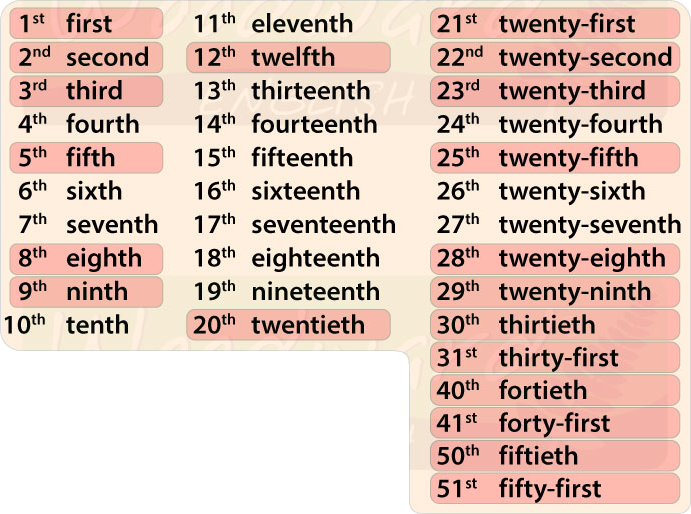

Para decir la hora en inglés se tiene en cuenta los minutos que pasaron antes de 30 minutos y los que pasaron después de 30 minutos.

Se tiene en cuenta los minutos que han pasado desde el 1 al 29.
El AFTER lo utilizan los americanos.
El PAST lo utilizan los británicos.
Una manera informal de decir la hora es:It's Hour + Minutes.
•(2:20): it's twenty past two
Son las dos y veinte
•(3:10): it's ten after three
Son las tres y diez
•(5:26): it's twenty-six past five
Son las cinco y veintiséis
•(12:07): it's seven after twelve
Son las doce y siete
Se tiene en cuenta los minutos que faltan para completar la hora siguiente.
El BEFORE lo utilizan los americanos.
El TO lo utilizan los británicos.
Se puede escribir también de manera informal: Its Hour + Minutes.
•(5:52): it's eight before six
Faltan ocho para las seis
•(2:35): it's twenty-five to three
Faltan veinticinco para las tres
•(5:59): it's one before six
Falta uno para las seis
•(9:43): it's seventeen to ten
Falta diecisiete para las diez
Cuando son 30 minutos, lo podemos reemplazar por: HALF PAST
Cuando son 0 minutos, lo podemos reemplazar por: O'CLOCK
Cuando faltan o pasaron 15 minutos, lo podemos reemplazar por: QUARTER PAST/TO
•(5:00): it's five o'clock
Son las cinco en punto
•(12:45): it's quarter to one
Falta un cuarto para la una
•(3:30): it's half past three
Son las tres y media
•(4:15): it's quarter past four
Son las cuatro y cuarto
Esta forma de expresar la hora no permite situarla en una franja horaria correcta (mañana, tarde o noche), aunque en la mayoría de casos sabremos por deducción de cual se trata. En los casos donde no sea posible se colocará al final de la frase la franja del día a la que corresponda la hora.
•(9:00): it's nine o'clock in the morning
Son las nueve (en punto) de la mañana.
•(3:15): it's quarter past three in the afternoon
Son las tres y cuarto de la tarde
•(7:30): it's half past seven in the evening.
Son las siete y media de la tarde/noche
•(2:00): it's two o'clock in the night
Son las dos (en punto) de la noche
Para decir la fecha en inglés primero hay que saber los números ordinales.
DÍA: Se escriben en forma ordinal (1st, 31st)
MES: La inicial siembre va en mayúscula (March, April)
AÑO: A la hora de pronunciarlo, se divide en 2 grupos (1984=nineteen eighty-four)
| Español | Inglés |
|---|---|
| Enero | January |
| Febrero | February |
| Marzo | March |
| Abril | April |
| Mayo | May |
| Junio | June |
| Julio | July |
| Agosto | August |
| September | September |
| Octubre | October |
| Noviembre | November |
| Diciembre | December |
| Español | Inglés |
|---|---|
| Lunes | Monday |
| Martes | Tuesday |
| Miércoles | Wednesday |
| Jueves | Thursday |
| Viernes | Friday |
| Sábado | Saturday |
| Domingo | Sunday |
•Christmas is on December 25th
La Navidad es el 25 de diciembre
•The last time I saw him was on June 3rd
La última vez que lo vi fue el 3 de junio
•America was discovered on October 12th, 1492
América fue descubierta el 12 de octubre de 1492
•Today is Monday, February 13th
Hoy es lunes, 13 de febrero
•He was born on 11th February
Él nació el 11 de febrero
•The story begins on 18 June, 1982
La historia comienza el 18 de junio de 1982
•We will stay at the hotel from August 12th to August 18th
Nos quedaremos en el hotel del 12 de agosto al 18 de agosto
•The meeting will be next Tuesday, May 18
La reunión será el próximo martes 18 de mayo
Sara Alejandra Martinez Moreno
Carlos Andrés Cristancho Muñoz
saramartinez1607@gmail.com
cacristancho722@misena.edu.co